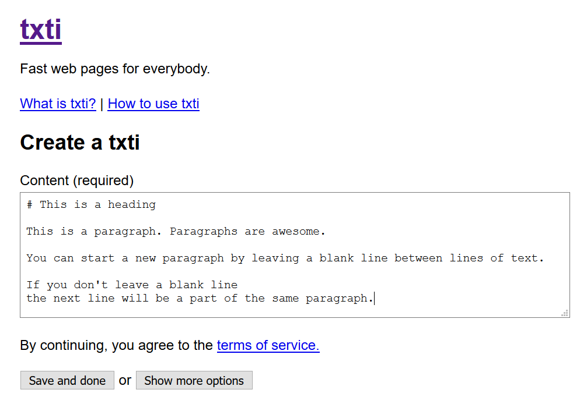

Markdown is a markup system originally developed by John Gruber.
According to his website:
Markdown is a text-to-HTML conversion tool for web writers. Markdown allows you to write using an easy-to-read, easy-to-write plain text format, then convert it to structurally valid XHTML (or HTML).
Thus, “Markdown” is two things: (1) a plain text formatting syntax; and (2) a software tool, written in Perl, that converts the plain text formatting to HTML. See the Syntax page for details pertaining to Markdown’s formatting syntax. You can try it out, right now, using the online Dingus.
The overriding design goal for Markdown’s formatting syntax is to make it as readable as possible. The idea is that a Markdown-formatted document should be publishable as-is, as plain text, without looking like it’s been marked up with tags or formatting instructions. While Markdown’s syntax has been influenced by several existing text-to-HTML filters, the single biggest source of inspiration for Markdown’s syntax is the format of plain text email.
Markdown is used by many developers and writers, and it's a tool
you'll use throughout this year, especially in GitHub. You should
keep your Markdown reference card handy while you complete this
lesson.
Complete all eight lessons in the Markdown Tutorial.
Raise your hand and have Mr. Olinda verify this checkpoint.
Although you can use any text editor to write Markdown, not all
editors can preview what it will look like when you're ready to
print or publish. So we will use a web service that will let you
see the results quickly so you can make changes and correct
mistakes.
Go to txti.es in another tab. This website allows you to publish extremely simple pages online using Markdown. In the text box, type in the following text, including the blank lines:
# This is a heading
This is a paragraph. Paragraphs are awesome.
You can start a new paragraph by leaving a blank line
between lines of text.
If you don't leave a blank line
the next line will be a part of the same paragraph.
Your screen should look like this when you are done:

Go ahead and press Save and done. On the next screen it will ask you for your email. Type in your school email address and click Email the below info. Then open the page you just created by clicking the viewing link.
Raise your hand and have Mr. Olinda verify this checkpoint.
Go to the edit link for your page by adding /edit
at the end of the URL and pressing Enter. Make the first sentence
of the first paragraph italicized by putting underscores (the _
character) on either side of it. Make the second sentence of the
first paragraph bold by putting two asterisks (the * character) on
either side of it. Scroll to the bottom of the page and put in
your edit code that was emailed to you. Then press Save and
done.
Raise your hand and have Mr. Olinda verify this checkpoint.
Go to the edit link for your page by adding /edit
at the end of the URL and pressing Enter. Add an ordered list (a
list that is numbered) of five items to your website. Remember to
put the number at the very beginning of the line, followed by a
period and a space. It's better to start each list item with a 1.
so that you can rearrange them later without having to change the
numbers.
Then create an unordered list (a list that uses bullet points) of five items to your website. Remember to start each line with an asterisk and a space. Scroll to the bottom of the page and put in your edit code that was emailed to you. Then press Save and done.
Raise your hand and have Mr. Olinda verify this checkpoint.
Go to the edit link for your page by adding /edit
at the end of the URL and pressing Enter. Whenever you quote text
from another source in a web page, you should use the blockquote
tag. In Markdown, we indicate the start of a blockquote with the
> symbol. Copy this paragraph into your page and add the >
symbol and a space at the beginning of the paragraph. Scroll to
the bottom of the page and put in your edit code that was emailed
to you. Then press Save and done.
If the quote doesn't appear indented and you can see the >
symbol, that means there is a problem with txti, not your
Markdown formatting. This isn't something you can fix, so you
can move on to the next checkpoint.
Raise your hand and have Mr. Olinda verify this checkpoint.
Go to the edit link for your page by adding /edit
at the end of the URL and pressing Enter. To create a link to
another page, you surround the text you want linked with [ and ]
and the actual link with ( and ). Create a link to this page in
your website.
To add images, we use the same syntax as with links, except you put a ! in front of the [link text] to tell the computer it is an image, not a traditional link. Go ahead and copy the link to the picture in Checkpoint 2 and then insert it into your website. Scroll to the bottom of the page and put in your edit code that was emailed to you. Then press Save and done.
Raise your hand and have Mr. Olinda verify this checkpoint.
Turn in your checkpoint sheet to the assignment basket
once it is completely signed. You may now work on stretch
projects.